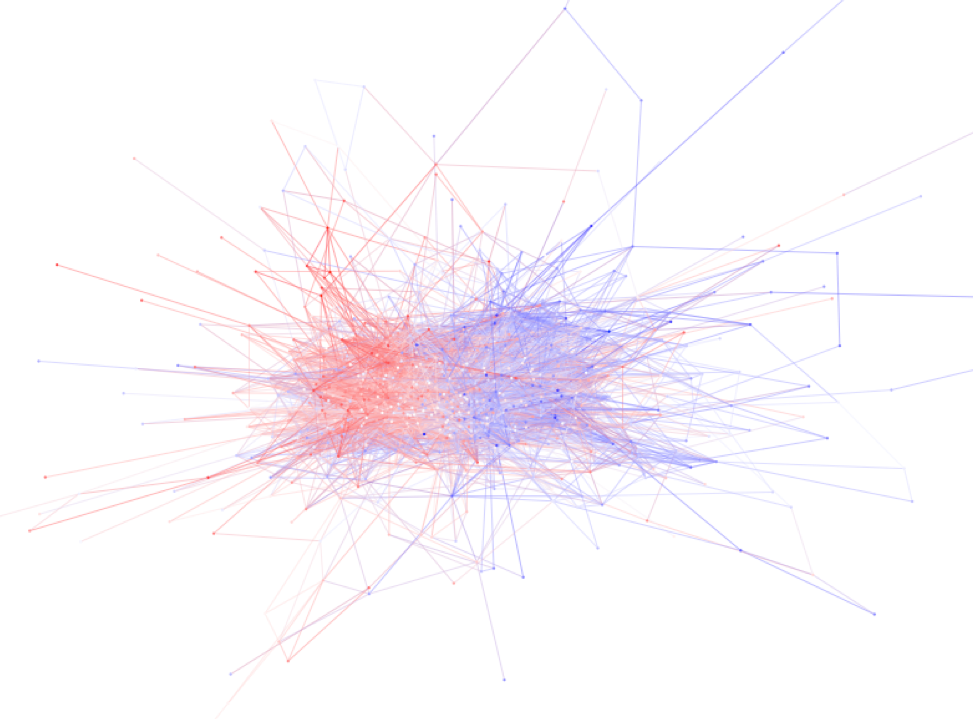

Methods for Network Analysis
Fall 2021
About this Course

This 4-5 credit hour seminar is intended as a theoretical and methodological introduction to social network analysis. Though network analysis is an interdisciplinary endeavor, its roots can be found in classical anthropology and sociology. Network analysis focuses on patterns of relations between actors. Both relations and actors can be defined in many ways, depending on the substantive area of inquiry. For example, network analysis has been used to study the structure of affective links between persons, flows of commodities between organizations, shared members between social movement organizations, and shared needles between drug users. What is common across these domains is an emphasis on the structure of relations, which serves to link micro- and macro-level processes.
Methods, in traditional social science conception, are largely technical affairs and distinct from theory. But in the history of social network analysis, the distinction between theory and method was never strong. Network methods operationalize core theoretical constructs and in developing them, scholars produce theoretical statements of their own, or amend those of others. As such, the development of network methods – influenced by linear algebra, statistics, and graph theory – has played a key role in the conceptual development of the field of social network analysis. This class could just as fittingly be called Social Network Theory.
The class is structured with the unity of theory and method in mind. Each week covers a core set of interrelated ideas from the history of social network analysis. On Mondays, we discuss seminal papers which introduce, evaluate, and debate those core ideas. Wednesdays’s class entails a technical lab, where we learn how to apply the ideas discussed on Monday to a network of your choosing in R (a statistical programming language). By the end of the course, you should be able to read and understand the basic mathematics underlying network analysis as well as implement network methods in R, but no prior knowledge of these skills is needed.